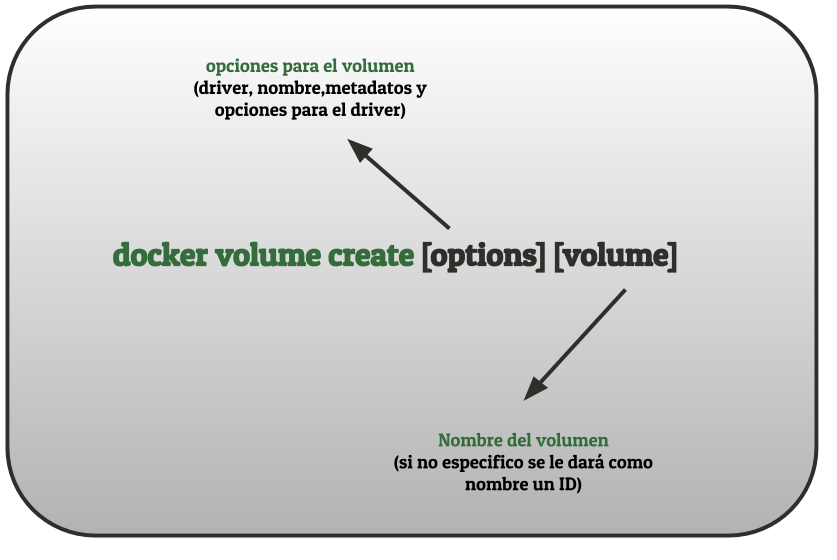
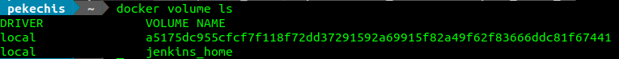

4.3 Gestionando volúmenes y obteniendo información
En el apartado anterior presentamos las dos opciones para la persistencia de datos con docker que consideramos que eran de mayor interés para el desarrollo de software: volúmenes y bind mounts. En este apartado nos centraremos en los volúmenes y en las operaciones básicas que podemos hacer con ellos mediante la orden docker volume. Estas operaciones son:
Creación de los volúmenes.
Eliminación de los volúmenes.
Obtención de información de los volúmenes.
En el apartado siguiente veremos como, una vez hayamos definido estos volúmenes, podremos usarlos en nuestros contenedores.
CREACIÓN DE VOLÚMENES
Para la creación de volúmenes vamos a usar la orden docker volume create que tiene la siguiente estructura:

Juan Diego Pérez Jiménez. Creación de volúmenes. Estructura de la orden docker volume create(Dominio público)
Entre las opciones que podemos incluir a la hora de crear los volúmenes están:
--driver o -d para especificar el driver elegido para el volumen. Si no especificamos nada el driver utilizado es el local que es el que nos interesa desde el punto de vista de desarrollo porque desarrollamos en nuestra máquina. Al ser Linux en mi caso ese driver local es overlay2 pero existen otras posibilidades como aufs, btrfs, zfs, devicemapper o vfs. Si estamos interesados en conocer al detalle cada uno de ellos aquí tenemos más información.
--label para especificar los metadatos del volumen mediante parejas clave-valor.
--opt o -o para especificar opciones relativas al driver elegido. Si son opciones relativas al sistema de ficheros puedo usar una sintaxis similar a las opciones de la orden mount.
--name para especificar un nombre para el volumen. Es una alternativa a especificarlo al final que es la forma que está descrita en la imagen superior.
Vamos a ilustrar este funcionamiento con varios ejemplos:
# Creación de un volumen llamado datos (driver local sin opciones)
> docker volume create data
# Creación de un volumen data especificando el driver local
> docker volume create -d local data
# Creación de un volumen llamando web añadiendo varios metadatos
> docker volume create --label servicio=http --label server=apache Web
Aunque queda fuera del alcance de los objetivos de este curso es importante destacar que mediante otras opciones podríamos indicar que los volúmenes estén en otros dispositivos, en montajes nfs e incluso en servicios de almacenamiento en nube públicas o privadas.
ELIMINACIÓN DE VOLÚMENES
Para la eliminación de los volúmenes creados tenemos dos opciones:
docker volume rm para eliminar un volumen en concreto (por nombre o por id).
docker volumen prune para eliminar los volúmenes que no están siendo usados por ningún contenedor.
A continuación vamos a ver una lista de ejemplos para ilustrar el funcionamiento de ambos:
# Borrar todos los volúmenes que no tengan contenedores asociados
> docker volume prune
# Borrar todos los volúmenes que no tengan contenedores asociados sin pedir confirmación (-f o --force)
> docker volume prune -f
# Borrar todos los volúmenes sin usar que contengan cierto valor de etiqueta (--filter)
> docker volume prune --filter label=valor
NOTA: NO SE PUEDEN ELIMINAR VOLÚMENES EN USO POR CONTENEDORES, salvo que usemos el flag -f o --force y no es algo recomendado.
OBTENCIÓN DE INFORMACIÓN DE LOS VOLÚMENES
Si queremos obtener información de los volúmenes que hemos creado podemos hacerlo de dos formas:
Usando docker volume ls que nos proporciona una lista de los volúmenes creados y algo de información adicional.
Usando docker volume inspect que nos dará una información mucho más detallada de el volumen que hayamos elegido.
LISTA DE VOLÚMENES DEL SISTEMA
Si ejecutamos la siguiente orden:
# Listar los volúmenes creados en el sistema
> docker volume ls
Obtendremos una salida similar a la siguiente:

Juan Diego Pérez Jiménez. Obteniendo la lista de volúemes .docker volume ls(Dominio público)
Como podemos ver, la información que nos proporciona es limitada, el driver usado y el nombre que tenga cada volumen de la lista. Si no tiene nombre se nos muestra el ID del volumen.
INFORMACIÓN DETALLADA DE UN VOLUMEN
Si queremos información más detallada de un volumen tenemos que ejecutar la siguiente orden: